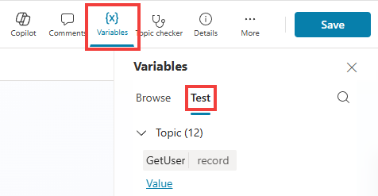
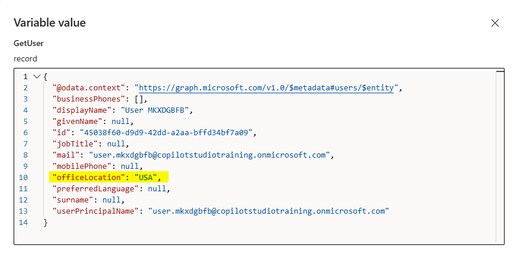
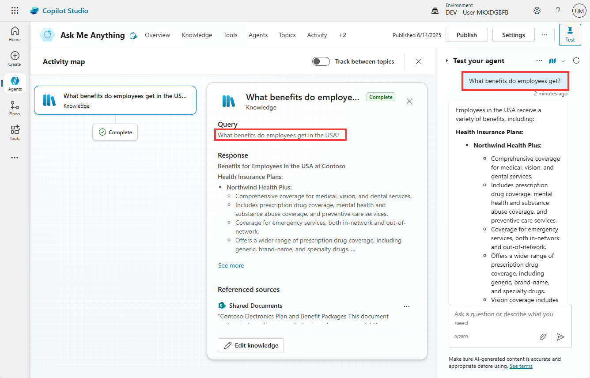

Ask Me Anything Agent
Create an ‘Ask me anything’ agent for your employees
Empower employees with answers that matter – Build an intelligent agent that connects to your knowledge and data.
🧭 Lab Details
| Level | Persona | Duration | Purpose |
|---|---|---|---|
| 200 | Maker | 40 minutes | After completing this lab, participants will be able to create an intelligent “Ask me anything” agent that connects to multiple knowledge sources including SharePoint, ServiceNow, and custom knowledge bases. Participants will learn to configure knowledge prioritization, deploy agents to Microsoft 365 Copilot, and implement AI-powered document analysis with human review workflows. |
📚 Table of Contents
- Why This Matters
- Introduction
- Core Concepts Overview
- Documentation and Additional Training Links
- Prerequisites
- Summary of Targets
- Use Cases Covered
- Instructions by Use Case
- Use Case #1: Create an ‘Ask Me Anything’ Agent and Add SharePoint Knowledge Source
- Use Case #2: Configure Suggested Prompts
- Use Case #3: Deploy to Microsoft 365 Copilot
- Use Case #4: Knowledge Prioritization Techniques
- Use Case #5: Create a child IT Support Agent
- Use Case #6: Add Custom Knowledge
- Use Case #7: AI Summary and Review of Meeting Notes
🤔 Why This Matters
Makers and IT professionals - Tired of employees constantly asking the same questions about policies, benefits, or system status? Frustrated by scattered knowledge across multiple systems?
Think of your organization’s knowledge like a library:
- Without an intelligent agent: Employees waste hours searching through SharePoint folders, submitting IT tickets for simple questions, and interrupting colleagues for information that should be readily available
- With an intelligent agent: Employees get instant, accurate answers from a single conversational interface that automatically searches across all your knowledge sources with proper citations
Common challenges solved by this lab:
- “I can’t find the leave policy for my country in our SharePoint site”
- “What’s the status of my ServiceNow incident?”
- “Can someone help me structure these meeting notes properly?”
- “I need information from multiple systems but don’t know where to look”
This 40-minute investment will save your organization countless hours and improve employee satisfaction by providing instant access to knowledge.
🌐 Introduction
In today’s fast-paced business environment, employees need quick access to accurate information from multiple sources. Whether it’s HR policies, IT incident status, or custom knowledge bases, information is often scattered across different systems, making it difficult for employees to find what they need efficiently.
Real-world example: Imagine Sarah, a new employee in Germany, needs to understand her leave entitlements. Currently, she might spend 30 minutes navigating through SharePoint folders, trying different search terms, or even asking HR colleagues. With an intelligent “Ask me anything” agent, Sarah simply types “What’s the leave policy for Germany?” and instantly receives the accurate policy document with proper citations, saving time and reducing frustration.
This lab teaches you to build a comprehensive solution that transforms how employees interact with organizational knowledge, creating a single conversational interface that intelligently routes questions to the right knowledge sources and provides contextual, accurate responses.
🎓 Core Concepts Overview
| Concept | Why it matters |
|---|---|
| Knowledge Source Integration | Connects your agent to multiple data sources (SharePoint, ServiceNow, custom APIs) so employees get comprehensive answers from a single interface, eliminating the need to search multiple systems. |
| Context-Aware Knowledge Prioritization | Intelligently routes questions to the most relevant knowledge sources based on user context (location, role, etc.), ensuring employees get personalized and accurate information. |
| Microsoft 365 Copilot Deployment | Makes your agent available where employees already work, integrating seamlessly into their daily Microsoft 365 workflow for maximum adoption and convenience. |
| AI-Powered Document Analysis | Automates the processing and structuring of unstructured content like meeting notes, reducing manual work while maintaining human oversight for accuracy and approval. |
📄 Documentation and Additional Training Links
- Microsoft Copilot Studio Documentation
- Knowledge Sources in Copilot Studio
- Deploy Copilot Studio agents to Microsoft 365
- ServiceNow connector for Power Platform
- Adaptive Cards for Interactive Experiences
✅ Prerequisites
- Access to Microsoft Copilot Studio with appropriate licensing.
- Access to SharePoint Online with sample knowledge content.
- ServiceNow access for incident management integration (demo environment provided).
- Understanding of basic conversational AI concepts and Microsoft 365 administration.
🎯 Summary of Targets
In this lab, you’ll build a comprehensive “Ask me anything” agent that serves as a central knowledge hub for your organization. By the end of the lab, you will:
- Create an ‘Ask me Anything’ agent and add SharePoint as a knowledge source.
- Configure suggested prompts for better user guidance.
- Deploy to Microsoft 365 Copilot for seamless integration.
- Learn to prioritize knowledge sources based on user context.
- Add ServiceNow incidents integration for real-time ticket status.
- Add custom knowledge sources via HTTP requests.
- Implement AI summary and review of meeting notes with human oversight.
🧩 Use Cases Covered
| Step | Use Case | Value added | Effort |
|---|---|---|---|
| 1 | Create an ‘Ask Me Anything’ Agent and Add SharePoint Knowledge Source | Establishes foundational agent with SharePoint knowledge integration and grounded AI responses | 5 min |
| 2 | Configure Suggested Prompts | Guides users toward the agent’s best capabilities through strategic prompt suggestions | 3 min |
| 3 | Deploy to Microsoft 365 Copilot | Makes the agent available in Microsoft 365 Copilot for seamless user access | 5 min |
| 4 | Knowledge Prioritization Techniques | Implements context-aware knowledge routing for personalized and relevant responses | 8 min |
| 5 | Use Case #5: Create a child IT Support Agent | Discover how scoping for knowledge and tools can also be done through the multi-agent capabilitis. | 5 min |
| 6 | Add Custom Knowledge | Extends knowledge base with custom HTTP endpoints for enterprise system integration | 7 min |
| 7 | AI Summary and Review of Meeting Notes | Automates document analysis with human review workflows for accuracy and approval | 7 min |
🛠️ Instructions by Use Case
🧱 Use Case #1: Create an ‘Ask Me Anything’ Agent and Add SharePoint Knowledge Source
Create a foundational intelligent agent with SharePoint integration for grounded AI responses.
| Use case | Value added | Estimated effort |
|---|---|---|
| Create an ‘Ask Me Anything’ Agent and Add SharePoint Knowledge Source | Establishes foundational agent with SharePoint knowledge integration and grounded AI responses | 5 minutes |
Summary of tasks
In this section, you’ll learn how to access the Solutions area of Copilot Studio, create a new agent, and integrate SharePoint as a knowledge source.
Scenario: Properly setup your development environment so that you can later easily package and deploy your agents to other environments. Your organization has extensive knowledge stored in SharePoint that needs to be accessible through conversational AI.
Objective
Create a new agent with SharePoint knowledge integration that provides grounded, cited responses.
Step-by-step instructions
-
Navigate to the Copilot Studio home page at copilotstudio.microsoft.com
-
Go to the Solutions menu (located in the left-hand menu under the ellipsis …)
-
Select the solution you had created
-
Select New, and choose Agent
-
Select the Configure tab
-
Name your agent
Ask Me Anything -
Select Create
-
Go to Knowledge

- Select SharePoint, and paste the SharePoint Knowledge URL and select Add.
[!IMPORTANT]
- For configuration, use the provided values in the Lab Resources (specific per training).
-
Choose Add
-
Test your agent with this question:
What's the Northwind Health Plus Benefits plan?
[!TIP]
- Notice how relevant it is, and how the citations are accurate. This demonstrates the power of grounded AI responses.
🏅 Congratulations! You’ve completed Use Case #1!
Test your understanding
Key takeaways:
- Solution Management – Using solutions ensures proper environment management and deployment capabilities
- Knowledge Integration – SharePoint integration provides immediate access to organizational documents with proper citations
- Grounded AI – The agent automatically provides source citations, ensuring transparency and trust in responses
🔄 Use Case #2: Configure Suggested Prompts
Guide users toward your agent’s best capabilities through strategic prompt suggestions.
| Use case | Value added | Estimated effort |
|---|---|---|
| Configure Suggested Prompts | Guides users toward the agent’s best capabilities through strategic prompt suggestions | 3 minutes |
Summary of tasks
Suggest things your agent can do to your end-users through carefully crafted prompts.
Scenario: Help users discover the full capabilities of your agent by providing clear, actionable suggestions that demonstrate different use cases.
Step-by-step instructions
-
Go to the overview tab for your agent
-
Add suggested prompts:
| Title | Prompt |
|---|---|
Ask me about benefits |
What's the Northwind Health Plus Benefits plan? |
Ask me about policies |
What's the leave policy in Germany? |
Help fill out meeting notes |
Capture and structure meeting notes |
Check on an incident |
What's the status of INC0007001? |
- Save the prompts
[!TIP]
- Prompts are visibile to the end-user when the agent is deployed as a Copilot agent.
🏅 Congratulations! You’ve completed Use Case #2!
Test your understanding
- How do suggested prompts improve user adoption and engagement with your agent?
- What makes an effective suggested prompt versus a generic one?
🔄 Use Case #3: Deploy to Microsoft 365 Copilot
Make the agent available in Microsoft 365 Copilot for seamless user access.
| Use case | Value added | Estimated effort |
|---|---|---|
| Deploy to Microsoft 365 Copilot | Makes the agent available in Microsoft 365 Copilot for seamless user access | 5 minutes |
Summary of tasks
Make the agent available in Microsoft 365 Copilot for your users.
Scenario: Deploy your agent where employees already work, ensuring maximum adoption by integrating directly into their daily Microsoft 365 workflow.
Step-by-step instructions
-
Go to the agent and select Publish
-
Go to Channels
-
Select Teams and Microsoft 365 Copilot
-
Select Add channel (at the bottom right corner)
-
Close the channel pane
-
Publish the agent again.
-
Select Teams and Microsoft 365 Copilot channel tile
-
Select See agent in Microsoft 365

-
In the Microsoft 365 Copilot experience, the agent description will pop up. Select Add
[!TIP]
- You may need to give it a few tries/minutes the first time you deploy to Microsoft 365 Copilot so it deploys correctly.
- If encountering issues, try to publish your agent agent.
- If this doesn’t work, try in Teams instead:
- Choose See agents in Teams instead.
- In the new window, if prompted This site is trying to open Microsoft Teams, select Cancel, and the select use the web app instead
- Test the agent with the benefits prompt
[!TIP] If deploying to Teams, prompts won’t be available, so paste the below question:
What's the Northwind Health Plus Benefits plan?
🏅 Congratulations! You’ve completed Use Case #3!
Test your understanding
- Why is deploying to Microsoft 365 Copilot more effective than standalone deployment for enterprise scenarios?
- What considerations should you have when choosing deployment channels?
🔄 Use Case #4: Knowledge Prioritization Techniques
Implement context-aware knowledge routing for personalized and relevant responses.
| Use case | Value added | Estimated effort |
|---|---|---|
| Knowledge Prioritization Techniques | Implements context-aware knowledge routing for personalized and relevant responses | 8 minutes |
Summary of tasks
In this section, you’ll learn different techniques to help prioritize the right knowledge sources based on context.
Scenario: The SharePoint site has different folders for different country leave policies. Asking “What’s the leave policy?” doesn’t return relevant results and seems to randomly pick a leave policy for a country. You need to implement context-aware routing.
Step-by-step instructions
Let’s start by asking for the user country at the beginning of the conversation. In many situations, this can be obtained from context, either passed from a web page to the agent, or by making an initial call (for example to the Entra ID connector) to get more information about the logged-in user and their location.
Setting an office location in Entra ID
- Start by assigning an office location to your user. Use the Workshop Agent and ask
Set location. You will then be prompted to choose from a list of countries, and then hit Submit. This will update your user’s Office Location property in Microsoft Entra.
[!IMPORTANT]
- Access the workshop agent in the same location as when you created your training user account.
- You will need the workshop code and your training user’s email address if you previously closed the agent.
- You can repeat this process as desired.
Getting the office location of the logged-in user at the start of the conversation
-
Now, in your ‘Ask Me Anything’ agent, go to the Topics tab, and then to the System topics tab.
-
Open the Conversation Start topic
-
At the beginning of the topic, right after the Trigger, add a new node (+) and choose Add a tool.
-
Go the Connector tab, and search for
Microsoft Entra ID Get user -
Select the Get user connector action and Submit.

-
In the Get user node, select
...and Properties -
Toggle the End user authentication to Maker-provided credentials.
-
In the Inputs tab, for User Id or Principal Name, select
..., go the the System tab, and select User.Id.

-
Give your topic a name, such as
Office Locationand Save -
Test if everything is working as expected by refreshing the conversation test pane.
-
Send a message such as:
Hello!
- Navigate to the Topics tab, open the Office Location topic, and to see what values are returned from the connector, enter the Variables pane in the topic command bar. Go the Test to see the variable values at runtime (i.e., as you are testing in the conversation test pane).

- Select Value under the GetUser record, and expand it to see if the expected value was returned.

- Because we will need to use that variable value in other parts and topics of the agent, select the GetUser variable and make it Global.

- Save
Dynamically filtering the searched SharePoint site with the office location
-
Go to the Topics tab, select + Add a topic and choose From blank
-
Update the topic name from Untitled to
Leave policy -
Under Describe what this topic does paste:
Use this tool for questions about leave policy, time off, etc.
-
Add a new node: Advanced > Generative answers
-
For input, select
..., go to the System tab and choose the Activity.Text variable.
[!TIP] The Activity.Text variable is super useful because it captures the last message/text the user has typed in or selected when interacting with the agent.

-
Go to the properties of the Create generative answers node
-
Select Search only selected sources and don’t select anything
[!TIP] This means that none of the knowledge sources that are configured at the top level of your agent will be used.
-
Toggle off Allow the AI to use its own general knowledge (preview)
-
Expand Classic data, for SharePoint (not Public websites!), toggle Manual input to Formula
-
Select the
...and go to the formula tab -
Paste the SharePoint classic data formula
[!IMPORTANT]
- Use the formula provided in the Lab Resources (specific per training).
- Notice how the formula concatenates the SharePoint URL with the office location, effectively using context to target the correct source and location for the content.

-
Select Insert once done, then Save your topic
-
Refresh the test pane and ask:
What's the leave policy?
- Verify that the leave policy used to generate this answer is the one matching the country you selected.
[!TIP] If formulas are too much code, you could also use condition nodes and configure different branches based on the selected country.
Influence knowledge searches with instructions
-
You can also influence how knowledge searches are performed by updating your agent instructions. Go to the Overview tab and go Edit the Instructions
-
Paste the below line
Always start by triggering the topic.
Always append the user country () in knowledge search queries (e.g., "<question> in <country>?") that are HR related.
-
We need to designate the topic to trigger in the instructions. Type
/and select Office Location. -
We also need to set the variable value in-between the parenthesis. Type
/and select Power Fx.

-
Type
Global.GetUser.officeLocationand select Insert -
Save the instructions
-
Test
What benefits do employees get?
- Notice how the query is rewritten to take into account the variables you provided, like country, augmenting the chances of returning the correct results for summarization.

🏅 Congratulations! You’ve completed Use Case #4!
Test your understanding
- How does context-aware knowledge routing improve the accuracy of responses?
- What other user attributes could be used for knowledge prioritization in enterprise scenarios?
🔄 Use Case #5: Create a child IT Support Agent
Integrate real-time incident management for comprehensive support capabilities and demonstrate agent scoping techniques.
| Use case | Value added | Estimated effort |
|---|---|---|
| Add ServiceNow Incidents | Integrates real-time incident management for comprehensive support capabilities with agent scoping best practices | 8 minutes |
Summary of tasks
In this section, you’ll configure the connection to ServiceNow to retrieve incident details, and learn how to scope agent capabilities for specific domains. This demonstrates how specialized tools can be integrated to create domain-specific expertise within your agent.
Scenario: Employees need quick access to their ServiceNow incident status without navigating to the ServiceNow portal. By integrating ServiceNow directly into your agent, you’re creating a specialized IT support capability that showcases agent scoping - where specific tools and knowledge are targeted for particular use cases, improving productivity and reducing support burden.
Understanding Agent Scoping with ServiceNow Integration
This use case demonstrates agent scoping principles:
- Specialized Tools: ServiceNow integration provides domain-specific capabilities
- Contextual Routing: IT-related queries automatically leverage ServiceNow tools
- Unified Experience: Users get comprehensive support from a single agent interface
Step-by-step instructions
Create a child agent
-
Go to your Ask Me Anything agent
-
Go to the Agents tab, and + Add an agent

-
Update
- Its Name to:
IT Support Agent - Its Description to:
Use this agent for queries related to IT (e.g., knowledge base frequently asked questions, incident updates, etc.) The agent can multiple multiple questions and queries at once. - Its Instructions to:
Use knowledge for problem/how-to/questions. Use the Get ServiceNow ticket details tool to get the status of incidents.
- Its Name to:
Add knowledge to the child agent
-
Select + Add in the Knowledge section of the child agent
-
Select ServiceNow
-
Choose the ServiceNow connection under Your connections, and Next
-
Select Knowledge as the knowledge source.
-
Select Add to agent
Add ServiceNow ticket details as a Tool to the child agent
-
Save your child Agent
-
Still within the IT Support Agent, scroll down to Tools and + Add a tool
-
Search for
ServiceNow List records -
Select Add and configure
-
Rename to
Get ServiceNow ticket details -
Change description to
Gets the details of an incident using its incident number. Use this tool when users ask about ServiceNow tickets, incident status, or IT support requests.
[!TIP] The description will help the AI know when to use that tool, so it’s important to have clear instructions WHEN and WHEN NOT to use this tool. This is a key aspect of agent scoping - being specific about tool usage.
- Under Additional details, change Credentials to use to Maker-provided credentials
[!IMPORTANT] In production scenarios, you may want to use the user context when making the connection to ServiceNow. Here, your context (as the author) is used by end-users of your agent when searching for incidents.
-
For Record Type, under Fill using, choose Custom value and choose
Incident -
Select + Add input and choose Query
-
Next to Dynamically fill with AI, select Customize and use this for Description:
The output of this variable is the concatenation of numberCONTAINS and the incident number. E.g., 'numberCONTAINSINC0007001'. Only the incident number should be prompted and obtained from the user (e.g., INC0007001)
[!TIP]
- Again, these instructions will be used by AI to understand how determine how to pass that information to the ServiceNow connector. In this case, how to use the very specific OData formatting of ServiceNow queries.
- If you get a “There is an error: ‘DuplicateItem’” error, toggle to Custom value, then switch back to Dynamically fill with AI and set the customized description again.
-
Select + Add input and choose Limit
-
Under Fill using, choose Custom value and set 1
-
Select Save
Test your IT Support Agent
-
Test your agent:
My USB port is no longer working on my PC... what can I do? While you're here, can you also share an update for case INC0000059? It's been quite a while since I've opened them... thanks!!
[!TIP] Notice how the agent automatically:
- Asks the user to consent before running a search using ServiceNow knowledge.
- Uses the appropriate ServiceNow tool based on the query type
- Handles multiple tickets in a single request (e.g., if you ask for both cases INC0000059 and INC0000060)
- Creates user-friendly responses with proper formatting
- Combines ServiceNow data with other knowledge sources when needed

- Observe how your agent now demonstrates scoped capabilities:
- Tool Selection: Automatically chooses the right ServiceNow tool based on user intent
- Context Preservation: Maintains conversation flow while using specialized tools
- Domain Expertise: Provides IT-specific guidance and next steps
- Unified Experience: Seamlessly integrates ServiceNow capabilities with other knowledge sources
[!IMPORTANT] This integration showcases how agents can be scoped for specific domains while maintaining a unified user experience. The ServiceNow knowledge and tools are automatically triggered for IT-related queries, demonstrating intelligent capability routing within a single agent.
🏅 Congratulations! You’ve completed Use Case #5!
Test your understanding
- How does ServiceNow integration enhance the employee experience compared to traditional ticket lookup methods?
- What other enterprise systems could benefit from similar agent integration?
🔄 Use Case #6: Add Custom Knowledge
Extend knowledge base with custom HTTP endpoints for enterprise system integration.
| Use case | Value added | Estimated effort |
|---|---|---|
| Add Custom Knowledge | Extends knowledge base with custom HTTP endpoints for enterprise system integration | 7 minutes |
Summary of tasks
In this section, you’ll configure any third-party knowledge to enrich knowledge results.
Scenario: Your organization has custom knowledge systems or APIs that contain valuable information not available in standard connectors. You need to integrate these sources into your agent.
Step-by-step instructions
-
Open your Ask Me Anything agent
-
Go to the Topics tab, select + Add a topic and choose From blank
-
Name your topic
Custom Knowledge -
In the topic command bar, select
...and Open code editor.Replace with the below YAML code:
kind: AdaptiveDialog beginDialog: kind: OnKnowledgeRequested id: main inputType: {} outputType: {}Once done, select Close code editor
-
Add a new node > Advanced, Send HTTP request
-
For URL, select
..., go the Environment tab, and choose the Custom Knowledge Endpoint variable you had created. -
Method:
Post -
Response data type:
Table -
Edit schema:
kind: Table properties: Article: String Id: String Title: String URL: String -
Edit Headers and body
-
For Body toggle from
No contenttoJSON content -
Toggle from
Edit JSONtoEdit formulaand paste the below:{ SearchQuery: System.Activity.Text } -
Under Save response as, select Create a new variable, select the variable name that was created (e.g., Var1) and rename it
KnowledgeResults.

-
Add a new node, Variable management > Set a variable value
-
Under Set variable, go to the System tab and choose SearchResults
-
Under To value, select
..., go to the Formula tab, and paste:ForAll( Topic.KnowledgeResults, { Title: Title, Content: Article, ContentLocation: URL } )
[!TIP] What we’re doing here with this formula is slightly transforming the content we receive from the HTTP request to the expected format that will allow to augment the search results, whenever Knowledge is invoked by the generative orchestration.
-
Save
-
Test:
How do I update the vendor information for an accounts payable invoice?
[!TIP] Notice how the knowledge step returned results that contain citations to a fictitious knowledge base.

🏅 Congratulations! You’ve completed Use Case #6!
Test your understanding
- How does custom knowledge integration expand the capabilities of your agent beyond standard connectors?
- What considerations should you have when integrating custom APIs for knowledge sources?
🔄 Use Case #7: AI Summary and Review of Meeting Notes
Automate document analysis with human review workflows for accuracy and approval.
| Use case | Value added | Estimated effort |
|---|---|---|
| AI Summary and Review of Meeting Notes | Automates document analysis with human review workflows for accuracy and approval | 7 minutes |
Summary of tasks
In this section, you’ll learn how to upload files and run files through a prompt for analysis, and how to use adaptive cards to ask for human review for edits before submitting a meeting report.
Scenario: Employees need help structuring meeting notes efficiently while maintaining human oversight for accuracy. You’ll implement AI-powered analysis with human review workflows.
Step-by-step instructions
-
Open your Ask Me Anything agent
-
Go to the Topics tab, select + Add a topic and choose From blank
-
Name your topic
Meeting Notes -
Under Describe what this topic does paste:
Use this tool to help users with meeting notes
-
Add a Question node:
Sure, I can help you with that! Please upload your meeting notesUnder Identify, select
FileRename the Save user response as variable from Var1 to
File -
Add a new node, Add a tool, New prompt
-
Change the Name to
Meeting AI Notes -
Keep the Model as
GPT-4.1 minior useGPT-4oif not available -
Select + Add content, and choose Image or Document
[!IMPORTANT] As a sample, use the Meeting Minutes.pdf file provided in the Lab Resources (specific per training).
-
Rename the input to
UploadedNotes -
In the Instructions, just below UploadedNotes, paste:
Using the content of the uploaded document, populate the following JSON record (for the schema, only string properties, no arrays, except for Data and time) with:
- Title of the meeting
- Description/summary
- Date and time
- List of attendees
- Action items / next steps
{
"MeetingTitle": "Title of the meeting",
"MeetingSummary": "Description/summary",
"MeetingDateTime": "Date and time",
"MeetingAttendees": "List of attendees",
"MeetingActions": "Action items / next steps"
}
-
Change the Output to
JSON -
Test your prompt
-
Save your prompt

-
Save the topic.
-
In the Prompt node, choose the
Filevariable as the input for UploadedNotes. -
Create a new variable for the output of the prompt node, and rename it
MeetingAINotes -
Add a new node, Ask with Adaptive Card
-
Go to Adaptive Card node properties.
-
Select Edit adaptive card.
-
In the Card payload editor, paste the below JSON:
{ "type": "AdaptiveCard", "version": "1.5", "$schema": "https://adaptivecards.io/schemas/adaptive-card.json", "body": [ { "type": "TextBlock", "text": "Please review and confirm the meeting minutes", "weight": "Bolder", "size": "Medium" }, { "type": "Input.Text", "id": "meetingTitle", "label": "Meeting title", "value": "<Replace with MeetingTitle>" }, { "type": "Input.Text", "id": "attendees", "label": "Attendees", "value": "<Replace with MeetingAttendees>" }, { "type": "Input.Text", "id": "date", "label": "Date and time", "value": "<Replace with MeetingDateTime>" }, { "type": "Input.Text", "id": "summary", "label": "Meeting summary", "isMultiline": true, "value": "<Replace with MeetingSummary>" }, { "type": "Input.Text", "id": "nextSteps", "label": "Next steps", "isMultiline": true, "value": "<Replace with MeetingActions>" } ], "actions": [ { "type": "Action.Submit", "title": "Confirm minutes" } ] } -
Select Save and Close.
[!TIP] Notice how the Adaptive Card editor offers a visual editor to create your own Adaptive Card experience with a no-code/low-code editor.
-
We now need to make the card dynamic to reference the content that was returned from the prompt. Toggle from JSON card to Formula card.
-
Expand the formula for more screen real estate.
-
For each
"<Replace with ...>", replace with the matchingTopic.MeetingAINotes.structuredOutput.<property>variable.Don’t forget to remove the double quotes.

-
Save your topic
-
Add a new Message node, and paste:
Thank you! I've successfully logged your meeting notes in our systems.
- Test your agent. Try to modify the content directly in the adaptive card before selecting Confirm minutes.
Please help me with my meeting notes

[!IMPORTANT] Note: the lab ends here, but imagine storing these in system of records, for example Dataverse, as a next step, after the user has confirmed the content.
🏅 Congratulations! You’ve completed Use Case #7!
Test your understanding
- What are the benefits of implementing human review workflows in AI-powered document analysis?
- How could you extend this pattern to other document types in your organization?
- What next steps could you implement to store the confirmed meeting notes?
Challenge: Apply this to your own use case
- What other document types could benefit from AI-powered analysis and structuring?
- How could you implement approval workflows for AI-generated content in your organization?
- What integration points would be valuable for storing confirmed content?
🏆 Summary of learnings
True learning comes from doing, questioning, and reflecting—so let’s put your skills to the test.
To maximize the impact of your “Ask me anything” agent:
- Knowledge Integration – Connect multiple data sources to provide comprehensive answers from a single conversational interface, eliminating information silos
- Context Awareness – Implement dynamic knowledge routing based on user attributes to ensure personalized and relevant responses
- Seamless Deployment – Deploy to Microsoft 365 Copilot to meet employees where they already work, maximizing adoption and convenience
- AI with Human Oversight – Combine AI-powered automation with human review processes to maintain accuracy while improving efficiency
- Continuous Improvement – Monitor usage patterns and user feedback to iteratively enhance knowledge sources and response quality
Conclusions and recommendations
Ask me anything agent golden rules:
- Start with high-value, frequently asked questions to demonstrate immediate ROI
- Implement proper authentication and permissions to ensure knowledge security
- Use suggested prompts to guide users toward the agent’s best capabilities
- Design context-aware experiences that reduce user input while increasing relevance
- Maintain human oversight for critical processes while automating routine tasks
- Monitor and analyze conversation patterns to identify knowledge gaps and improvement opportunities
By following these principles, you’ll create an intelligent knowledge hub that transforms how employees access information, reduces support burden, and improves organizational efficiency through conversational AI.